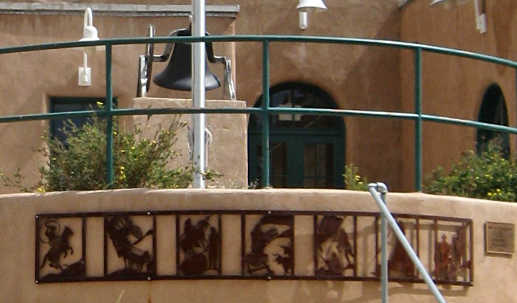

Thursday, November 5, 2026 · T or C · Elephant Butte · Hillsboro · Arrey · Sierra County
Hey neighbors, welcome to the first Hot Springs Weekly. Free, five minutes, all Sierra County.
In this issue: Local news · Report it · Spaceport · Jobs · Lake · Weather · This weekend · Gas · Blotter · Pet of the week · Family help · You Decide · Treasure Hunt · Sky · Did you know?
Read it online or pass it along: hotspringsweekly.beehiiv.com
Get it free every Thursday
Local news
Heads up: our publisher, Brenden Anglin, works for the City of T or C. City coverage sticks to public records, no opinions.
- City Commission (Oct 28): agenda included combining the lots at 401 and 403 Silver St., $65,250 from the fire fund for SCBA breathing gear, and water system change orders. The refuse truck order went up $5,000 due to a delay, from $390,000 to $395,000. Minutes aren't posted yet. Agenda packet
- Film shoot downtown Nov 10 and 11: Axonius asked to film its online event, Adapt Virtual 26, in T or C, and to ceremonially "rename" the town Axonius on Dec 9. Agenda packet
- Cantrell Dam: the City maintains the dam and is leading the repair, with help from the County Flood Commissioner. On Oct 20 the County Commission voted to chip in $200,000 toward construction. Resolution 2026-67
- County Commission (Oct 20): a resolution names the Sugar Sand Bridge the county's No. 1 infrastructure priority. About $6.84 million is lined up for the $8.68 million bridge, leaving it about $1.84 million short. Meeting packet
- Tigers football (5-5) is the No. 10 seed in the 3A playoffs and plays at No. 7 West Las Vegas (7-3) Saturday, Nov 7 at noon. Midnight Horizons Sports
- Tiger volleyball is 19-3 (5-0 district) and plays at Cobre tonight at 7. MaxPreps
- Mosquito spraying is extended through Nov 14. City of T or C
- Free Dump Day, Fri and Sat, Nov 13 and 14, 8:30 a.m. to 4 p.m. Winston, Hillsboro and Arrey transfer stations take household trash, construction debris and recyclables free. No tires. Illegal dumping on public lands can bring a fine up to $5,000. (Sierra County flyer)
- Next meeting: City Commission, Wed, Nov 18 at 9 a.m., 405 W. Third St. (agenda). County November agenda not posted yet; watch here.
Report it
Water leak, water or sewer problem: call the Daupler line at (575) 223-1930, or the Water Office at (575) 894-7331.
Water leak: scan to call
Streets, parks, sanitation: use the city's Report an Issue page.

Streets, parks, sanitation: scan to report
- Animal control, code enforcement, electric: Dispatch, (575) 894-7111.
- Outage alerts: call the Water Department to update your phone number so Daupler can reach you. (Water Watch)
Out at the Spaceport
Virgin Galactic's new ship, Apeiron, landed at Spaceport America on Oct 28, carried in from Arizona under the mothership Eve. Virgin says paying flights should start in early spring 2027 (its "early Q2"), a date that has slipped before. Virgin Galactic It reports Q3 results after markets close Thursday, Nov 12 (Virgin Galactic) and plans to share testing news then (Albuquerque Journal).
- Tours: Saturdays 9 a.m. from 523 N. Broadway (arrive by 8:40), back around 1. $49.99 adults, 7-person minimum. Book
- Road closures for drone testing: county road A039 and Lewis Road, Sat, Nov 7, 9 to 11:30 a.m., and Tue, Nov 10, 11:30 a.m. to 2 p.m. County packet
5 jobs hiring this week
- Spaceport Aerospace Engineer, NM Spaceport Authority. Closes Nov 10. Apply
- Accounting Clerk, Sierra County, $19.16 to $24.92/hr. Apply
- ER Registered Nurse (full time or PRN), Sierra Vista Hospital. Email hr@svhnm.org. Details
- Bus Driver, T or C Schools. Job · Apply
- Educational Assistant, T or C Schools. Job · Apply
Lake and fishing
- Elephant Butte: 4,306.6 ft on Nov 3, about 154,800 acre-feet (roughly 8 percent full), up about 9 ft since Oct 26. (Reclamation) Marina del Sur ramp open; Rock Canyon and South Monticello listed closed. Four-wheel drive needed to launch. 575-744-5923. (State Parks)
- Caballo: 4,139.0 ft, about 25,850 acre-feet (Oct 26). West ramp open, east closed. 575-743-3942. (State Parks)
- Fishing: catfish slow to fair on cut shad. (Game & Fish, Oct 29)
Weather, burn rules, roads
- Weather: highs near 66 Thursday through Saturday, 68 Sunday, lows mid 40s. 30 percent chance of showers Friday night into Saturday morning. (NWS)
- Burn rules: Gila NF fire danger low, no restrictions (Gila NF). Elephant Butte holds a hearing and final vote Wed, Nov 18 at 2 p.m. on Ordinance 231 (2021 Fire Code) and 232 (fireworks). Details
- Roads: I-25 and highways at NMRoads.com.
This weekend
- Studio Tour, Sat and Sun, Nov 7 and 8, 10 to 5, free. Social Sat 6 to 9 at Hot Springs Gallery, 517 Austin St. Stops
- Enchanted Enterprise, Nov 6 and 7. Chamber small business conference, registration required. torcchamber.org
- Night Market, Sat, Nov 7, 4 to 7, free, Healing Water Plaza. Details
- Butte General OHV grand opening ride, Sat, Nov 7, 900 NM Hwy 195. Free BBQ for registered riders. NMOHVA
- Giftable Art show, Nov 6 to Dec 7, RioBravoFineArt, 110 N. Broadway. Gallery
- C.L. Smith live, Sun, Nov 8, 4 to 7, T or C Brewing. Details
Gas
Love's, I-25 exit 79, Nov 4: regular $3.89, diesel $5.98. (Love's) No recent Elephant Butte prices posted. (GasBuddy)
Blotter
No arrest news released by T or C Police, Elephant Butte Police or the Sheriff Oct 28 to Nov 4. County emergency alerts: text SIERRACO to 80946.
Pet of the week: Inkspot
Shy but brave black shorthair, spayed adult, good with dogs, cats and kids. She takes lifelong nerve pain medicine, so she needs a patient home. Desert Haven Animal Rescue, Williamsburg · (575) 740-0643 · Inkspot's page
Free help for local families
Free listings. Nobody paid to be here.
- Healthy Families Sierra County: free home visits, pregnancy through early years. (575) 223-2585
- Little Things Matter (AppleTree): home visits, pregnancy to age 3, English and Spanish. (575) 894-5646
- Aprendamos Early Intervention: free help for delays, birth to 3. (575) 526-6682
- T or C Schools Family Resource Center: supplies, clothes, basics. (575) 894-8166
- Matthew 25 Food Pantry: free groceries Thursdays 9 to 11, 405 Austin St., no ID needed.
You Decide, Sierra County
What's the one thing you wish we had around here so you didn't have to drive to Las Cruces or Albuquerque for it?
- A. A place to eat or hang out late at night
- B. More shopping, like clothes, hardware or electronics
- C. Things for kids and teens to do
- D. Something else (tell us what)
Tap here to vote Results next week. By voting or replying, you agree we can print your name and reply.
Sierra County Treasure Hunt
Where in Sierra County is this?

Subscribe free, then reply to any issue with your guess. Answer and winners' names next week. Photo: AllenS, public domain, via Wikimedia Commons.
Above the Hot Springs
- Best night to look up: Wed, Nov 11 into Thursday. Northern Taurid peak with the moon only about 4 percent lit. Known for bright fireballs. (AMS)
- Moon: new moon Mon, Nov 9 at 12:02 a.m. (USNO)
- Sunset: 5:14 p.m. today, 5:09 p.m. by Nov 12. (USNO)
- Planets: Saturn in the east-southeast after sunset. Before sunrise, Venus low in the east-southeast with Jupiter and Mars higher, about 1.2 degrees apart Nov 15 and 16. (source, NASA)
- Leonids peak the night of Nov 16 to 17.
Did you know?
In June 2014 a stegomastodon fossil, an ancient elephant relative, turned up at Elephant Butte Lake State Park. (Wikipedia)
Send us yours
- Photo of the Week: your real shot from around the county, credited by name.
- Neighbor of the Week: who quietly makes this place better, and why.
- Lost or found pet: we run it free.
- Hiring? Send your opening for next week.
- Entrepreneur Spotlight: one local business or idea a week, $15 per issue, first few free, signed agreement your idea stays yours. 575-740-3555.
Sponsor Hot Springs Weekly
Founding sponsors: first 2 months free, then $25 a month, locked in. Call or text 575-740-3555.
Tips or corrections? Just reply. · Subscribe free at hotspringsweekly.beehiiv.com/subscribe · An independent newsletter by BRA Holding Co LLC, Truth or Consequences, NM. |